The wall behind a bed carries more visual weight than almost any other surface in a bedroom, yet it's often the last thing to get any real attention.
A little intention here goes a long way. The right wall treatment can make a room feel finished even when nothing else has changed.
None of the ideas below require a full renovation. Most come down to one focused decision: a gallery of frames, a bold wallpaper, a single oversized piece of art.

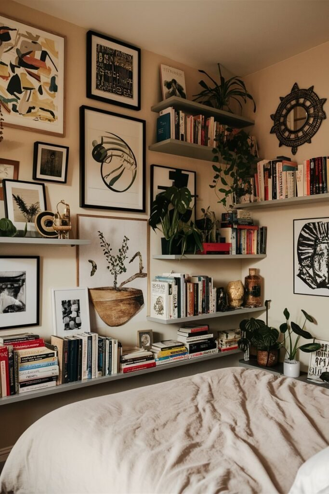
1. Cluster a Few Mirrors
Mirrors do a lot of quiet work on a bedroom wall. They bounce light around the room, make the space feel larger, and add a bit of polish almost instantly.
One large statement mirror makes a bold, simple move, while a cluster of smaller mirrors in varied frames above a headboard builds something closer to an art installation.
Vintage frames mixed into the cluster add a bit of flea-market charm.
The whole approach works especially well in a smaller room that could use the extra sense of space a single mirror alone can't quite deliver.
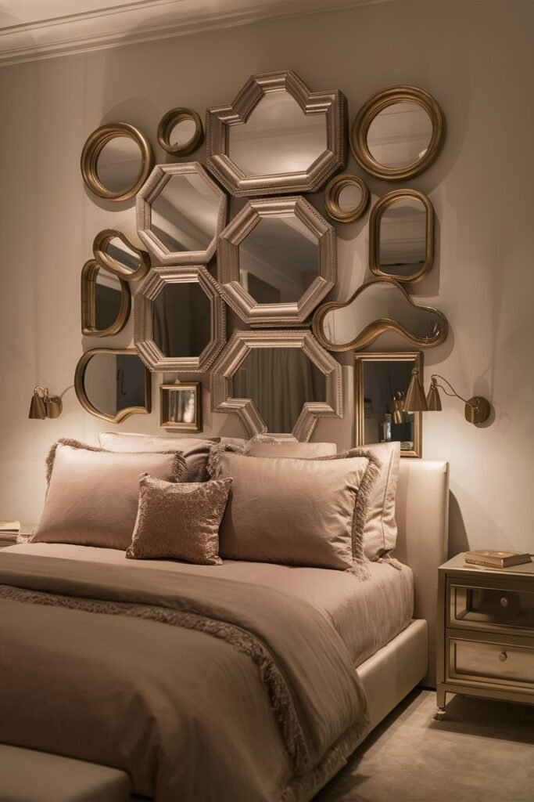
2. Hang a Few Plants on the Wall
Bringing a bit of greenery onto the wall itself adds life to a bedroom in a way flat decor can't replicate.
Macrame plant hangers bring an instant boho feel, trailing ivy or pothos require very little upkeep, and wall-mounted planters keep greenery organized without taking up floor space.
It's a wall decor choice that keeps paying off well after it's installed.
And if live plants feel like too much commitment, a realistic faux version does the job just as well.
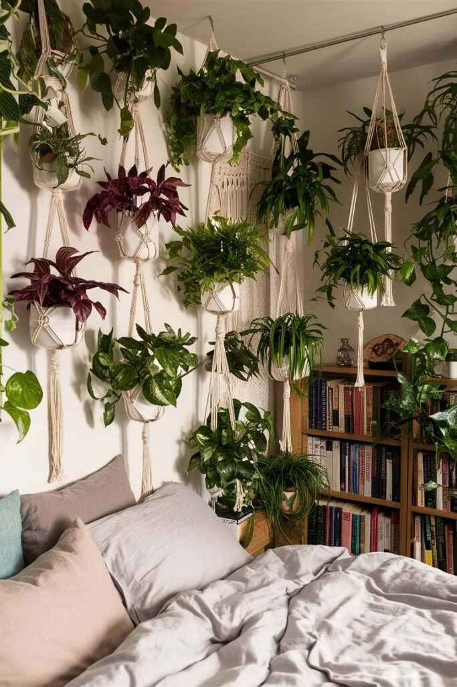
3. Go Big With a Wall Mural
For a wall that actually tells a story, a mural is hard to beat.
A hand-painted version works if you're comfortable with that level of commitment, while peel-and-stick mural wallpaper offers an easier route to the same dramatic effect.
Mountains, galaxies, abstract florals, whatever the theme, a mural turns an ordinary wall into the room's clear focal point and an easy conversation starter.
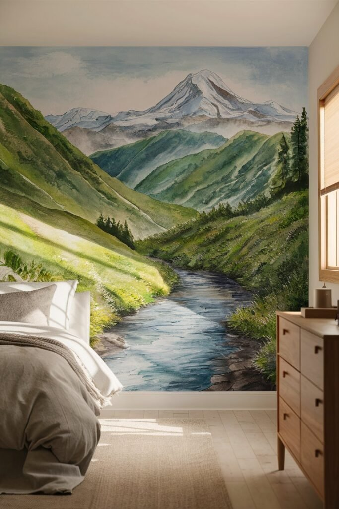
4. Add Wood Paneling
Wood paneling has made a genuine comeback, and for good reason. It brings real warmth and texture that flat paint simply can't match.
Reclaimed wood leans rustic, panels painted white or black bring a more modern twist, and vertical slats give the wall a sleeker, more high-end finish.
It's a strong option if you're chasing a cozy-but-elevated feeling, closer to a well-designed cabin than a typical bedroom wall.
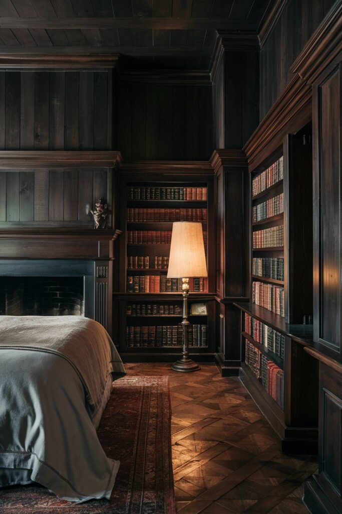
5. Add LED Light Strips
LED strips are a fast, inexpensive way to shift a bedroom's whole mood.
Tucked under a floating shelf, around the ceiling line, or behind the headboard, they add ambiance without requiring any real installation effort.
Color-changing options let the lighting shift with the mood of the room.
The low cost makes this one of the easier wall decor ideas to try without much risk if it doesn't end up being a long-term fixture.
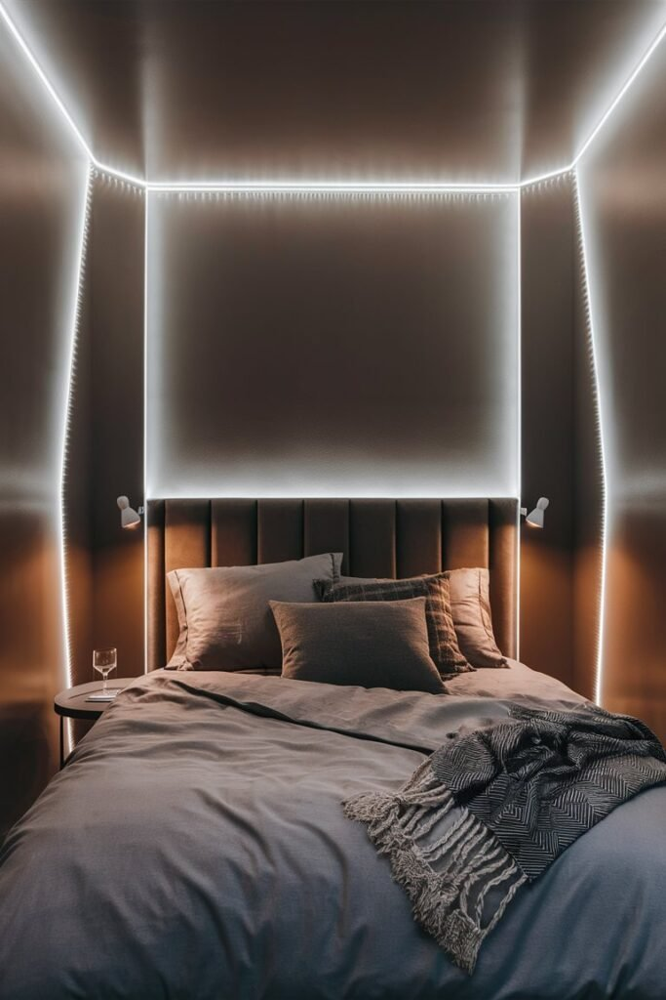
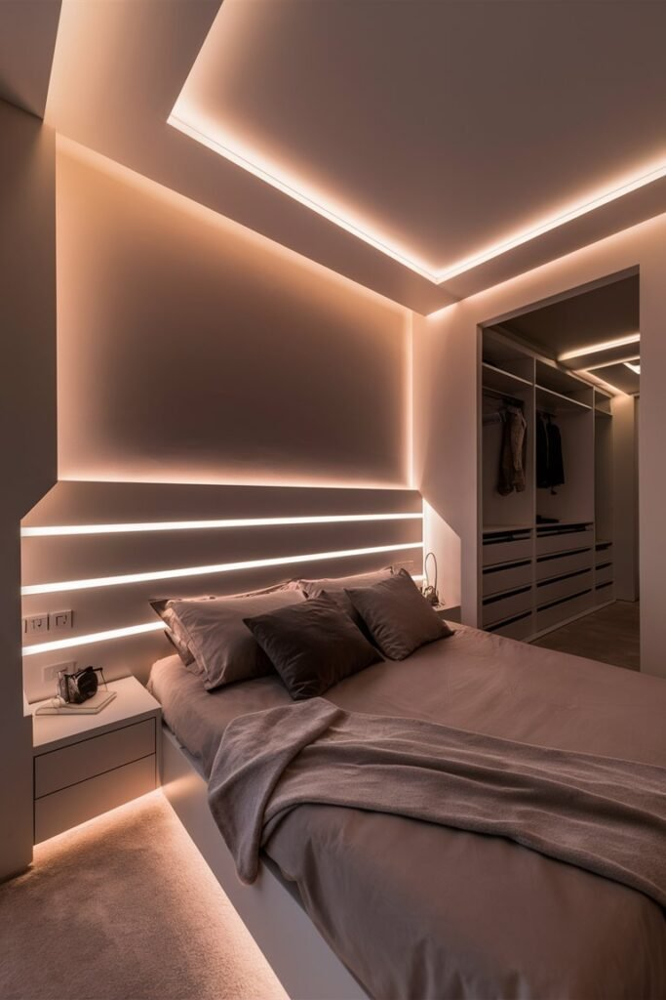
6. Hang a Tapestry
A tapestry functions almost like a giant soft blanket for the wall, and it's one of the easiest wall treatments to hang without any real commitment.
Boho mandalas, nature scenes, or a macrame hanging for extra texture all bring warmth to a bedroom without much cost.
It's a particularly good fix for a wall that needs softening, or simply needs something to cover it, and it reads as intentional rather than like a quick patch job.
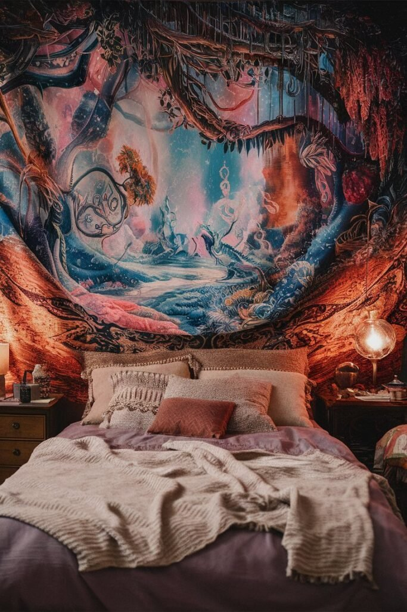
7. Go Big With Oversized Art
If your style leans away from minimalism, one large statement piece of art can anchor an entire room on its own.
The strongest choices coordinate with the room's existing color scheme and genuinely reflect your own personality, rather than reading as generic hotel-room art.
Abstract, scenic, or something a little unconventional all work. The scale of the piece does most of the work, making the whole space look curated even when nothing else in the room has been styled.
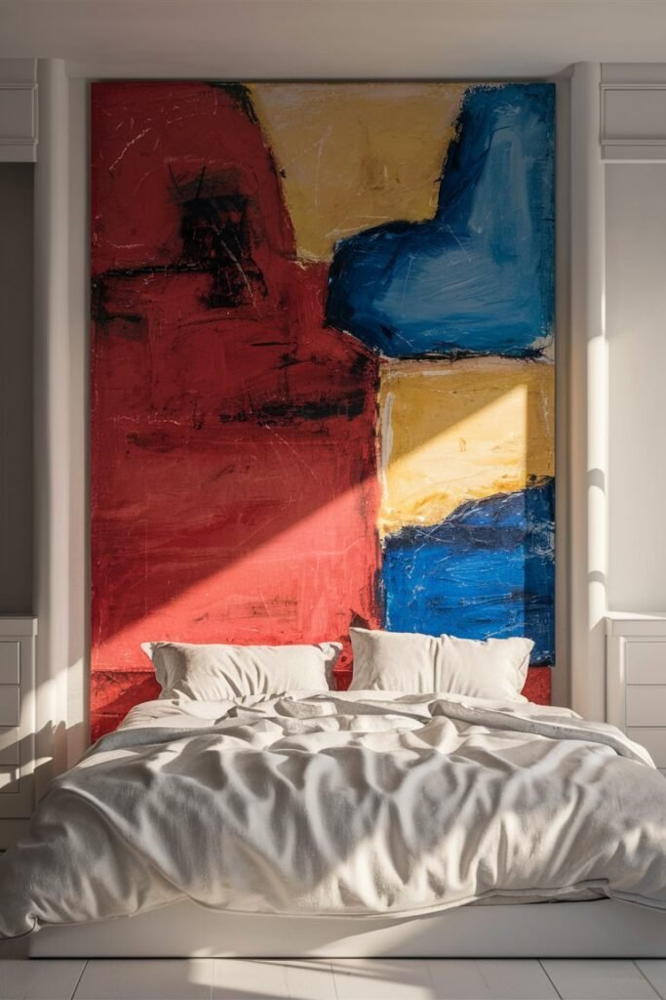
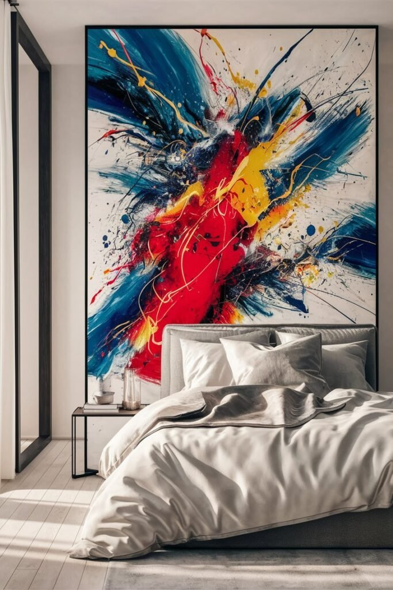
8. Commit to a Bold Wallpaper Accent
A single wallpapered accent wall is one of the fastest ways to transform a plain bedroom.
A tropical print brings vacation energy year-round, a geometric pattern leans more modern and structured, and a textured wallpaper adds depth without introducing much color at all.
Peel-and-stick options make this one of the lower-commitment choices on the list, which is part of why it remains such a reliable fix for a wall that's started to feel like an afterthought.
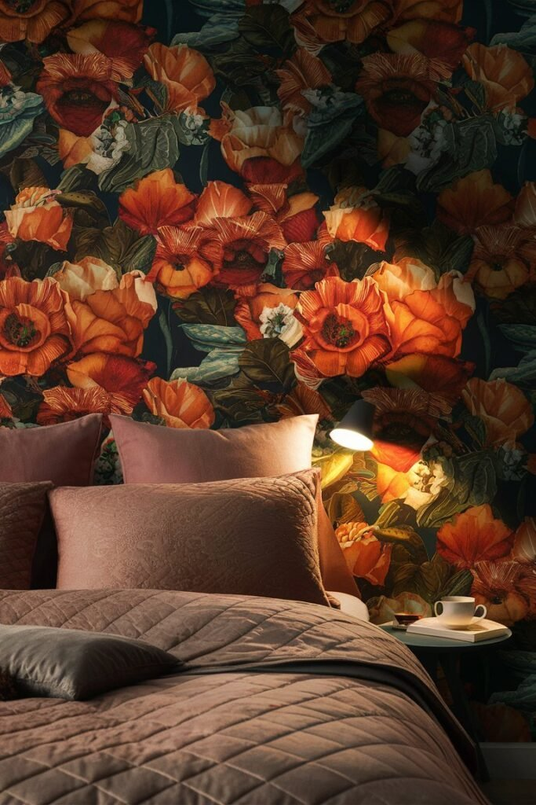
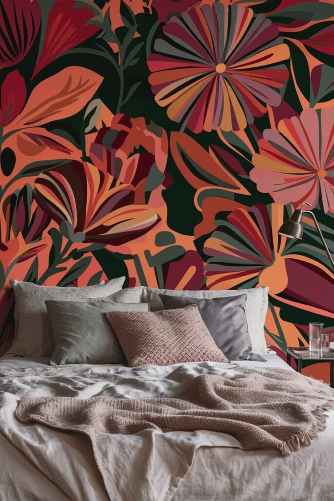
9. Add Floating Shelves
Floating shelves do double duty as both storage and styling, which makes them one of the more practical wall decor options available.
A few stacked hardcover books, a small plant or candle, and a framed photo or two is usually enough to fill a shelf without overloading it.
Because nothing here is permanent, floating shelves make it easy to swap decor whenever the mood changes. Flexibility that a fixed piece of art or wallpaper simply can't offer.
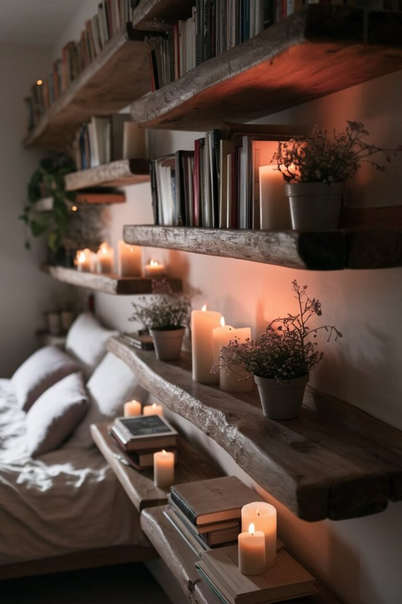
10. Build a Gallery Wall
A gallery wall is one of the most personal options on this list, since it's built entirely from pieces that already mean something to you.
Mixing art prints, photos, and a few printed quotes, varying the frame shapes for a bit of dimension, and sticking to one consistent color palette keeps the whole arrangement from feeling scattered.
It's a genuinely low-effort way to add high impact to a bedroom wall, and it also happens to be the easiest way to finally use whatever art has been sitting in a closet waiting for the right spot.
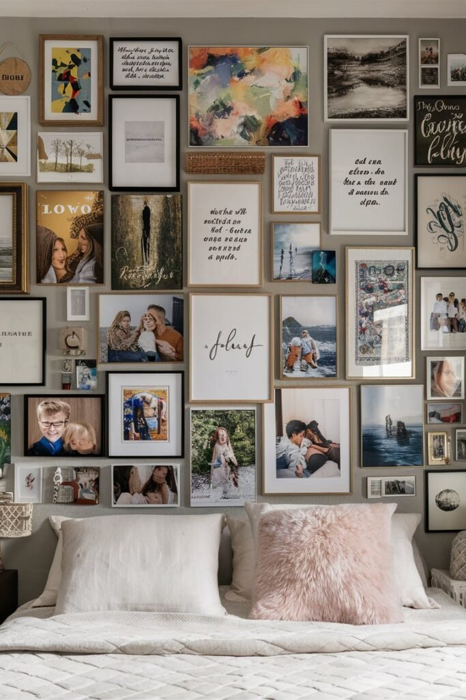
One Wall Treatment Is Usually Enough
None of these ten ideas require redoing an entire bedroom to make a real difference.
One well-chosen wall treatment, a gallery of frames, a bold wallpaper, a single statement mirror, is often enough to make the whole room feel considered.
The strongest choice is usually whichever one actually reflects how the room gets used, not necessarily the most dramatic option on the list.